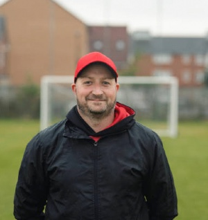

A-laget/ Damer
Klacksparkens damlag har en grupp på 20 tjejer med tillskott från U-laget. Läget i tabellen ser ljus ut för ett kval till division 2 nästa år.
Vi tränar fyra gånger i veckan med ett fyspass.
- Tisdagar: 20:00-21:00
- Onsdagar: Fys 20:30-21:30
- Torsdagar: 18:00-19:30
- Fredagar: 17:00-18:00
| Division 3: Damer | Vinster | Oavgjorda | Förluster | |
|---|---|---|---|---|
| Lag | Poäng | |||
| 1. Muggen IF | 30 | 10 | 0 | 2 |
| 2. Klacksparken BK | 27 | 8 | 3 | 1 |
| 3. Chippen IF | 24 | 6 | 6 | 0 |
| 4. Kramfors United | 23 | 6 | 5 | 1 |
| 5. Stig & co BK | 19 | 5 | 4 | 3 |
| 6. Sneträff FF | 15 | 3 | 6 | 3 |
| 7. Bollens FF | 11 | 3 | 2 | 7 |
| 8. Laxnacke IF | 7 | 1 | 4 | 7 |
Tränare
Simon har varit tränare för Klacksparkens damer i 3 säsonger och trivs väldigt bra i den rollen.
"I de år som jag varit tränare för tjejerna har detta varit det bästa. Vi har lagt upp en bra grund och nu kan vi börja satsa på riktigt vilket är jättekul att se."
"Jag ser fram emot att spela i division 2 nästa år", säger han lite kaxigt och skrattar.
"Energin som som laget har boostar även mig som tränare och gör att jag blir kvar en säsong till."
